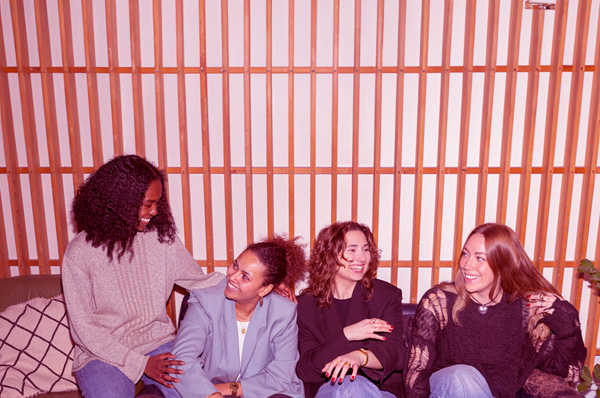
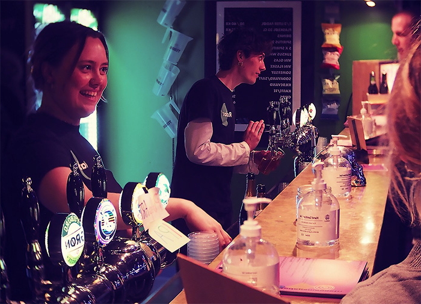
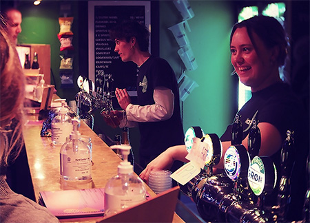
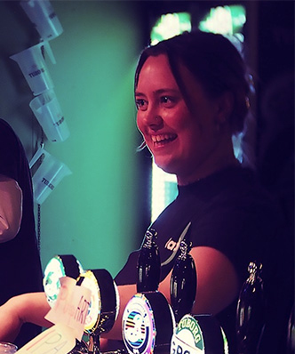
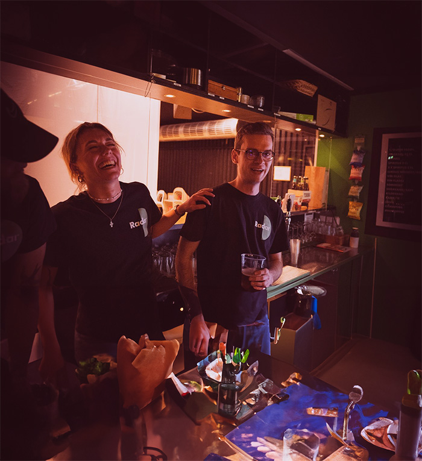
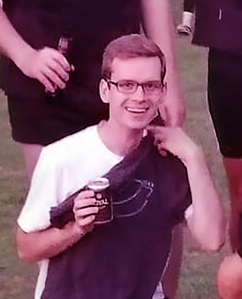

BLIV FRIVILLIG
Hos Radar er størstedelen af vores 45 medarbejderne frivillige og vi kan ikke eksistere uden dem.
DIVERSITET
FÆLLESSKAB
MUSIK
Som frivillig bliver du en del af et unikt fællesskab med kærlighed til musik
Det forventes derfor også at du er musik-og kulturinteresseret, har gode samarbejdsevner og er imødekommende for både gæster og musikere
For at blive taget i betragtning som frivillig SKAL DU VÆRE 20 ÅR
Når du er frivillig hos Radar får du blandt andet goder som:
- Gratis adgang til Radarskoncerter
- Billig barpriser
- Mulighed for at skrive venner og familie på gæsteliste
- Gæstelistepladser hos kollegaerne på Train
- Et fællesskab med nye venner
Når du er frivillig hos Radar får du blandt andet goder som:
- Gratis adgang til Radarskoncerter
- Billig barpriser
- Mulighed for at skrive venner og familie på gæsteliste
- Gæstelistepladser hos kollegaerne på Train
- Et fællesskab med nye venner



DET LAVER
DU SOM
FRIVILLIG
Som frivillig på Radar kan du have arbejde indenfor:
- Bar & dør
- Lys
- Foto
- Afvikling



"HER ER DER PLADS TIL ALLE"
Jakob fortæller dig om alt det fede ved at være frivillig
LÆS MERE